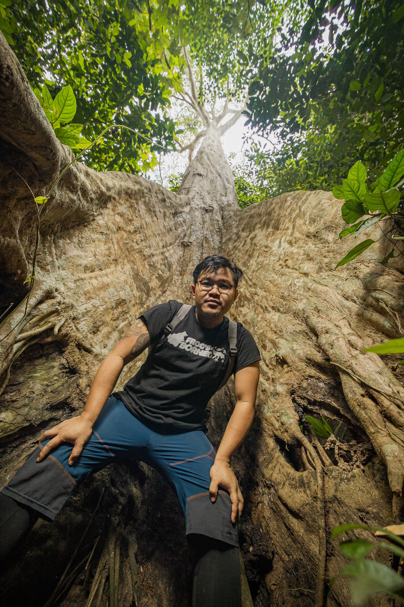

Herpetofauna
Konservasi buaya, amfibi, reptil, dan habitat yang menopangnya.
BORNEO · INDONESIA
Menghubungkan penelitian, pemantauan biodiversitas, dan kerja bersama masyarakat untuk menjaga kehidupan liar.

TENTANG SAYA
Saya tumbuh dalam masyarakat Dayak di Borneo, dengan penghormatan terhadap alam sebagai bagian dari kehidupan.
Fokus saya adalah konservasi herpetofauna, pemantauan satwa liar, dan perlindungan habitat. Saya tertarik menghubungkan penelitian ilmiah dengan konservasi berbasis masyarakat, termasuk bagi spesies terancam yang sering luput dari perhatian.
Dari survei lahan basah dan penanganan buaya hingga kamera trap dan analisis spasial, saya bekerja untuk memahami satwa beserta ruang hidupnya.
Fakultas Kehutanan dan Lingkungan Tropis
Universitas Mulawarman
Konservasi buaya, amfibi, reptil, dan habitat yang menopangnya.
Survei biodiversitas, kamera trap, dan pengelolaan rekaman lapangan.
Analisis spasial, drone, fenologi, dan teknologi pendukung konservasi.
Kemitraan masyarakat, edukasi lingkungan, dan pengelolaan program.
PENGALAMAN
Pengalaman membangun program, mengelola habitat, dan bekerja bersama tim lapangan.
Yayasan Ulin — Nusantara Lestari
Pengembangan strategi konservasi, kemitraan masyarakat dan pemangku kepentingan, edukasi lingkungan, evaluasi dampak, serta pengelolaan anggaran dan proposal hibah.
Yayasan Jejak Pulang
Persiapan lokasi pelepasliaran, analisis fenologi, pengelolaan perawatan orangutan, penyelamatan satwa, dan pengelolaan spasial.
PT REA Kaltim Plantation & Group
Konservasi buaya, dokumen penilaian RSPO, pengawasan standar kawasan bernilai konservasi tinggi, serta penelitian dan pengembangan pengelolaan HCV.
PORTOFOLIO LAPANGAN
Dokumentasi herpetofauna dan kegiatan pemantauan. Pilih foto untuk melihat lebih dekat.
Lihat ilustrasi & posterFoto berasal dari portofolio Brian Martin. Lokasi pengamatan rinci dan koordinat tidak ditampilkan.
ILUSTRASI & POSTER
Ilustrasi satwa dan desain poster yang saya buat untuk mengomunikasikan penelitian serta konservasi.
ILUSTRASI SATWA
Eksplorasi bentuk, sisik, dan karakter satwa melalui ilustrasi hitam putih.
Ilustrasi: Brian MartinPengenalan jenis buaya dan habitatnya melalui fotografi, ilustrasi, dan infografik.
Desain: Brian MartinKomunikasi hasil penelitian dan rekomendasi konservasi di Fakultas Kehutanan Universitas Mulawarman.
Desain: Brian Martin · penelitian kolaboratifRespons masyarakat terhadap satwa, pemantauan, dan konservasi dalam bentang alam bersama.
Desain: Brian Martin · penelitian kolaboratifPilih karya untuk memperbesar, lalu gunakan “Buka ukuran penuh” untuk membaca detail poster. Informasi ilmiah mengikuti versi karya yang ditampilkan, bukan pembaruan status konservasi otomatis.

PROYEK TEKNOLOGI KONSERVASI
Dari data tabulasi menjadi aksi konservasi.
Aplikasi desktop yang saya kembangkan untuk membantu pengolahan foto kamera trap, review hasil identifikasi AI, dan pelaporan biodiversitas.
Buka Wildlitics OnlineUji coba khusus undangan · Login diperlukan · Kuota 50 atau 100 foto per proyek. Tautan sementara; layanan tersedia saat server aktif dan alamat dapat berubah setelah server dimulai ulang.
Batch per kamera · SpeciesNet + BioCLIP 2
Konfirmasi, koreksi, dan pengelolaan proyek
Kehadiran, aktivitas, peta, IUCN, dan PDF
AI membantu pemeriksaan; confidence bukan akurasi terukur. Hasil tetap memerlukan verifikasi manusia.
PENELITIAN & PUBLIKASI
Karya bersama peneliti dan rekan lapangan tentang satwa serta bentang alam Borneo.
Animal Biodiversity and Conservation · 47.2 · 123–134
BirdingASIA · 38 · 83–85
Naskah tercantum dalam portofolio
Ditulis sebagai “in review” pada portofolio 2025. Status ini belum menyatakan publikasi final.
SATWA & SENI
“Konservasi adalah hak
semua satwa.”
Brian Martin · diterjemahkan dari portofolio
MARI TERHUBUNG
Untuk bertukar gagasan tentang penelitian, pemantauan biodiversitas, dan teknologi konservasi.